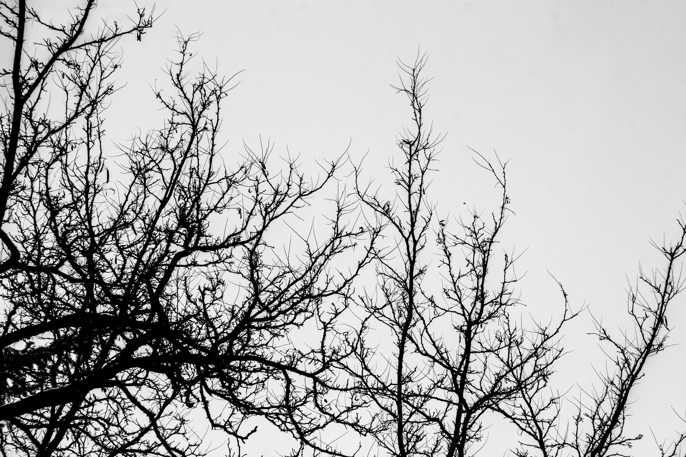

I keepwhat stays.
Not a portfolio. A room for the images, worlds, and little details I could not leave behind.
 COLL. 001
COLL. 001
NOTE / 01A personal collection is a map of what I notice.
“I am less interested in owning an image than in giving a feeling somewhere to live.”
I’m N1GHT CHXN9. I collect photographs of weather, branches, roads, and the sudden colour of an ordinary day. I keep the ones that change the temperature of a room.
The collection also has a digital shelf: games with places I remember, systems I can’t stop thinking about, and stories that followed me home.
Frames I kept.
Eleven photographs. No timeline — only what stayed.
11 frames / 02 studies
On desktop, continue scrolling to move through the frames. Each frame remains a button.
Worlds I still carry around.
A game can be a place, a habit, or a sentence you keep finishing in your head. These are the ones that made it into my collection.
Leave anote.
If something here reminds you of something you keep, send it my way. New additions, references, and gentle arguments are always welcome.